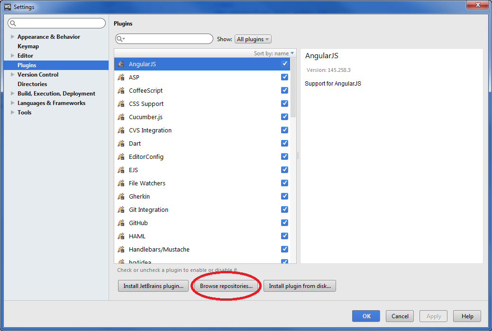
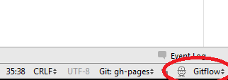
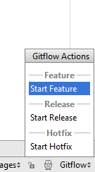

Git Flow revealed
About Me
Software Architect at Sopra Steria (XNet)

Au menu
- What is Git flow?
- Getting started
What is Git flow?

Main branches

Feature branches

Release branches

Hotfix branches

Getting started
Initialisation
Setup
apt-get install git-flowInitialisation
git flow init -dCommands

Features
git flow feature start MYFEATUREgit flow feature finish MYFEATUREFeatures sharing
git flow feature publish MYFEATUREgit flow feature pull origin MYFEATUREReleases
git flow release start RELEASEgit flow release finish RELEASEgit push --tagsHotfixes
git flow hotfix start FIXgit flow hotfix finish FIXWebStorm integration
Setup
WebStorm integration
Setup

WebStorm integration
Usage
